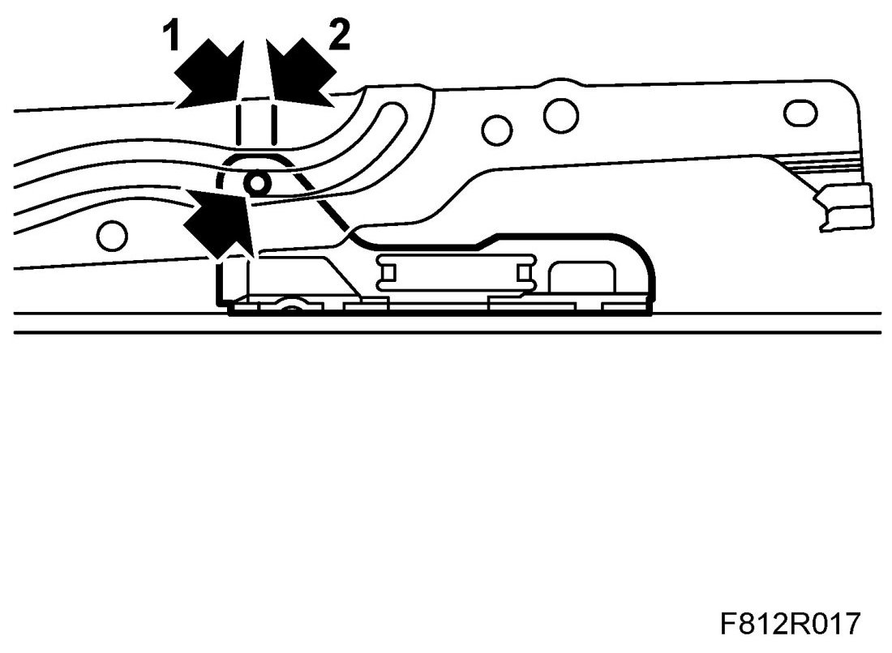
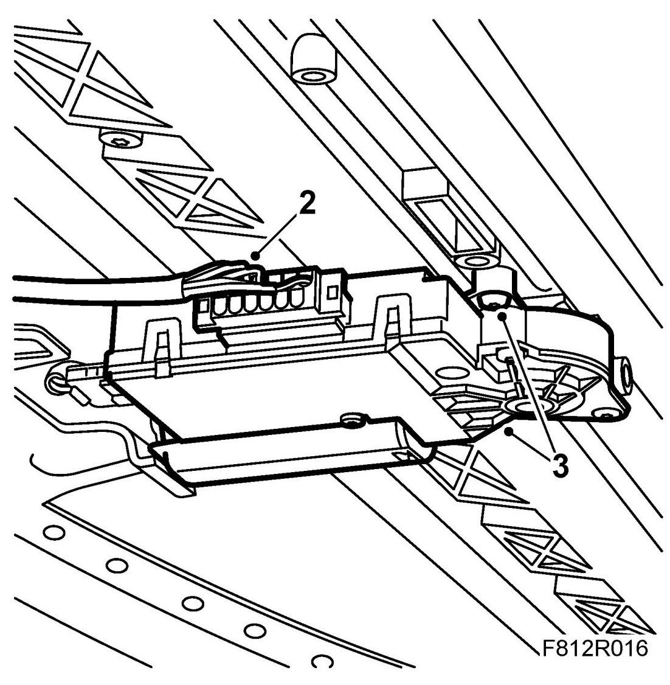
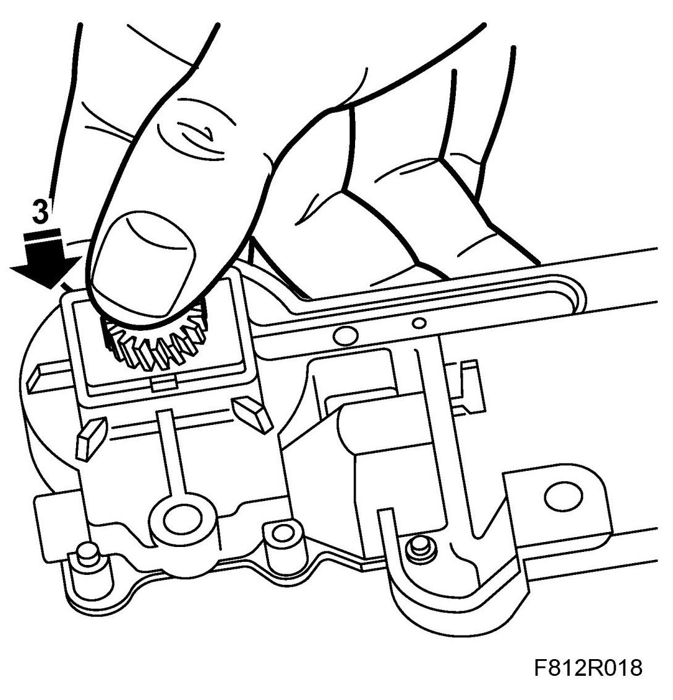
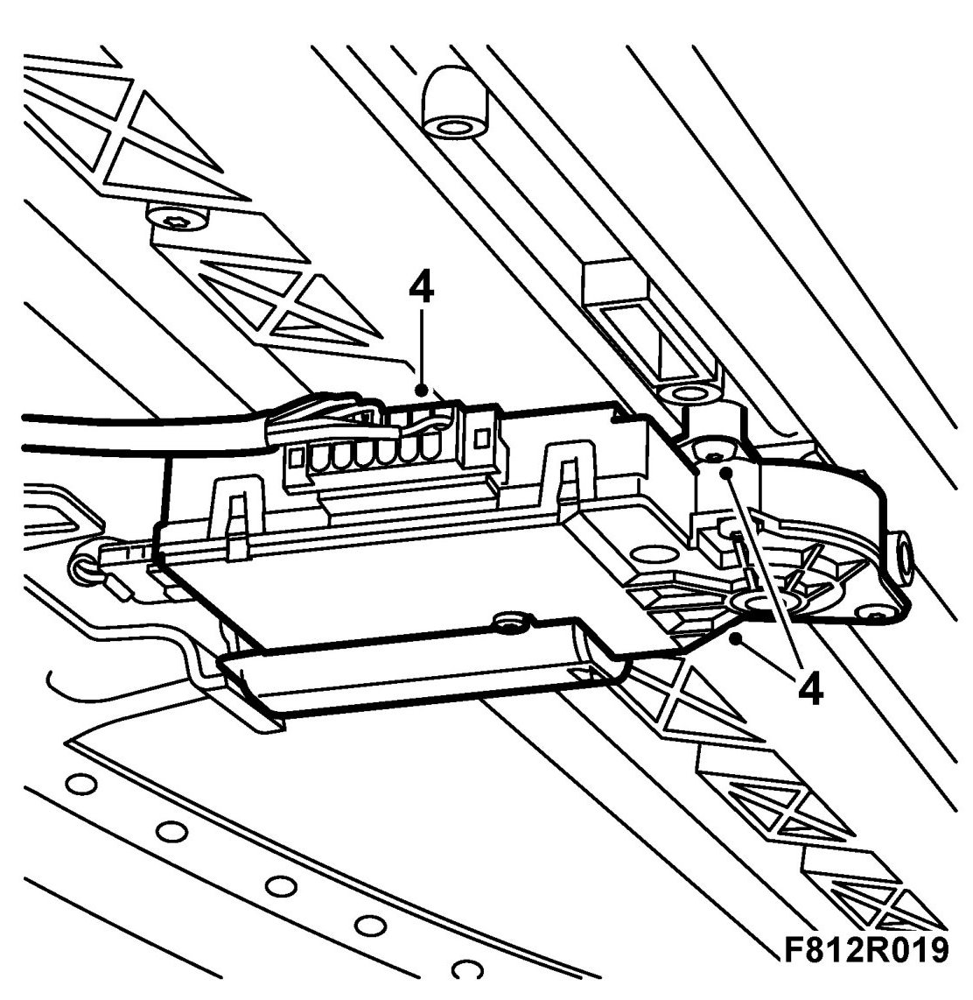

Electric Motor For Sunroof (With Pinch Protection)
Electric Motor For Sunroof (With Pinch Protection)
NOTE: Before removing the electric motor for the sunroof, the sunroof must first be fully opened in tilt position and then closed from the same position. This must be done to synchronise the mechanics and electronics when fitting a new electric motor. By removing the side protection, it is possible to check that the mechanism is located correctly. The slide shaft must be between the marks (1 and 2) on both sides.

NOTE: If the sunroof motor is malfunctioning, the hatch can be operated manually with a screwdriver.
Before removing the sunroof motor, perform preparations prior to removing a control module.
To remove
1. Remove the headlining, see Headlining 4D , Headlining 4D, US/CA or Headlining, 5D
IMPORTANT: Take care when releasing the locking mechanism on the connector so as not to damage the connector. Pull the halves straight apart to avoid bending the pins. For further information regarding connectors, refer to Connectors, handling and inspection.
2. Remove the connector from the sunroof's electric motor.

3. Remove the sunroof motor.
To fit
IMPORTANT: Take care when plugging in the connector so as not to damage or press out the pins/sleeves in the connector. For further information regarding connectors, refer to Connectors, handling and inspection.
1. Plug in the connector to the sunroof motor.
2. This procedure must be carried out before a new sunroof motor is fitted.
Operate the electric motor for the sunroof to open it to ventilation position (tilt) by pressing the switch up. Release the switch, and then press the switch up again and hold for approx. 3 seconds.
3. This procedure must be carried out before a new sunroof motor is fitted.
Using your thumb, press the drive wheel at the same time as running the sunroof motor as if to close the sunroof from the tilt position. This is done by pressing the switch to position two (forward).

4. Fit the sunroof's electric motor.

Tightening torque 3 Nm (2 lbf ft)
5. Carry out procedures after fitting control module. This procedure includes calibrating the control module.
6. Fit the headlining, see Headlining 4D, Headlining 4D, US/CA or Headlining, 5D